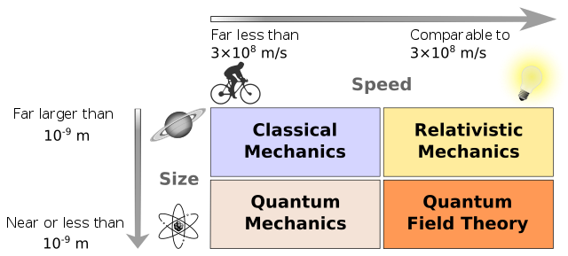

Week 1 - Overture: What is Classical Physics?#
There are many different fields of physics; they are both distinct and overlapping. If we were to take a view of what kinds of physical systems that we wanted to investigate with different physics, we could organize them based on the system’s size and speed of change:
Classical physics: large, slow systems
Statistical and quantum mechanics: small, slow systems
General relativity: large, fast systems
Quantum field theory: small, fast systems
These are not hard and fast rules, and, in fact, we often bring physics from different spaces together to solve complex problems. For examples, the fields of climate modeling, non-linear dynamics, astrophysics, and particle physics use physical models and tools for each of the fields above. How we organize physics for ourselves depends on how we decide we want to look at it. However the first view where we organize the field by size and speed is a useful way to think about the different kinds of physics that we have developed thus far. The figure below shows how we might organize physics by size and speed.

Source: Wikipedia
{kind=link}
Classical Physics is the physics that we developed before discovering relativity and quantum mechanics. It typically covers both mechanical systems and electromagnetic systems. It is also the physics that we read about historically, which has its roots in ancient astronomy and has existed across many different cultures.
Wherever there were people, there was Classical Physics.
You might have heard of the development physics in the Hellensitic age where the Greeks used mathematics to study astronomical objects, or how Newton’s Laws of motion came to be. These are both examples of classical physics.
But there are many more including astronomical analyses in Sub-Saharan Africa in 300 BCE, massive scientific expansion in China during the Song dynasty, and studies that pushed the fields of optics, mechanics, and astronomy in the Islamic Golden Age.
While we do not often present it, much to the detriment of our own field, physics and astronomy were a large part of indigenous cultures across the world including in what become the United States.
Classical Mechanics#
When we define Classical Mechanics, at least for the purposes of this class, we will define it as the physics of large, slow, mechanical systems.
Large - Systems are typically big enough that we can see them with our eyes, or maybe with some reasonably simple optical tools. We’re typically excluding the microscopic world of atoms and molecules.
Slow – Systems for which we can observe their motion and track them “visually”; that is they move much slower than the speed of light. This is a critical assumption that we make in classical mechanics.
Mechanical – Systems where the fields of electromagnetism don’t come into play. We relax this is bit when we think of a particle in a classical E&M field, but the focus is still on modeling the particle and not the field.
Modeling Large, Slow, Mechanical Systems#
Classical mechanics is a physics that allows us to model these large, slow, mechanical systems.
It helps us develop an understanding of that process of making models and how we can use models to make predictions. It is a physics that results typically in deterministic models, where we can predict the future of a system given its current state. This is because the language of Classical Mechanics is differential equations, which describe how a system changes as a result of influences from it’s environment. It is often a vector-based physics as it describes the pushes and pulls on a system in a given direction. However, we can often develop scalar models or systems of scalar equations that describe the motion of a system.
Ultimately, Classical Mechanics is a physics that allows us to interrogate the behavior of these systems and describe their dynamics. Through Classical Mechanics, we can describe the present state of a system, how it will evolve, and then use that information to make predictions about the future. What we learn from Classical Mechanics can become a set of powerful tools that we can use in many contexts.
Applications of Classical Mechanics#
While it might appear there’s little room for using Classical Mechanics in research or in industry now, it turns out there’s tons of room. It is still the physics that enables us to understand fluid systems, nonlinear mechanical effects, continuum mechanics, animal locomotion, and many other systems. Below are several examples of how Classical Mechanics is used in research and industry. We encourage to watch these videos as they demonstrate how the physics we will learn in class is really central to continuing to understand nature.
Fluid Mechanics at LANL (6 minute video)#
Researchers at Los Alamos National Lab do a variety of research using fluid mechanics models.

Biologically-Inspired Robotics (2 minute video)#
A research lab at Georgia Tech uses Classical Mechanics to model the motion of animals and then uses that information to build robots that can move like animals.

Classical Mechanics in this Class#
Classical mechanics is a topic which has been taught intensively over several centuries. It is, with its many variants and ways of presenting the educational material, normally the first physics course many of us meet and it lays the foundation for further physics studies. Many of the equations and ways of reasoning about the underlying laws of motion and pertinent forces, shape our approaches and understanding of the scientific method and discourse, as well as the way we develop our insights and deeper understanding about physical systems.
There are a wealth of well-tested (from both a physics point of view and a pedagogical standpoint) exercises and problems which can be solved analytically. However, many of these problems represent idealized and less realistic situations. The large majority of these problems are solved by paper and pencil and are traditionally aimed at what we normally refer to as continuous models from which we may find an analytical solution. As a consequence, when teaching mechanics, it implies that we can seldomly venture beyond an idealized case in order to develop our understandings and insights about the underlying forces and laws of motion.
On the other hand, numerical algorithms call for approximate discrete models and much of the development of methods for continuous models are nowadays being replaced by methods for discrete models in science and industry, simply because much larger classes of problems can be addressed with discrete models, often by simpler and more generic methodologies. For example, numerical integration is an enormously important tool in physics, and it is a method that is based on discrete models.
Analytical and Numerical Models Compliment Each Other#
As we will this semester, when properly scaling the equations at hand, discrete models open up for more advanced abstractions and the possibility to study real life systems, with the added bonus that we can explore and deepen our basic understanding of various physical systems
Analytical solutions are as important as before. In addition, such solutions provide us with invaluable benchmarks and tests for our discrete models. Such benchmarks, as we will see, allow us to discuss possible sources of errors and their behaviors. And finally, since most of our models are based on various algorithms from numerical mathematics, we have a unique opportunity to gain a deeper understanding of the mathematical approaches we are using.
Computing is an Essential Tool for Physics#
With computing and data science as important elements in essentially all aspects of a modern society, we could then try to define Computing as solving scientific problems using all possible tools, including symbolic computing, computers and numerical algorithms, and analytical paper and pencil solutions. Computing provides us with the tools to develop our own understanding of the scientific method by enhancing algorithmic thinking.
The way we will teach this course reflects this definition of computing. The course contains both classical paper and pencil exercises as well as computational projects and exercises. The hope is that this will allow you to explore the physics of systems governed by the degrees of freedom of classical mechanics at a deeper level, and that these insights about the scientific method will help you to develop a better understanding of how the underlying forces and equations of motion and how they impact a given system. Furthermore, by introducing various numerical methods via computational projects and exercises, we aim at developing your competences and skills about these topics.
These competences will enable you to
understand how algorithms are used to solve mathematical problems,
derive, verify, and implement algorithms,
understand what can go wrong with algorithms,
use these algorithms to construct reproducible scientific outcomes and to engage in science in ethical ways, and
think algorithmically for the purposes of gaining deeper insights about scientific problems.
All these elements are central for maturing and gaining a better understanding of the modern scientific process per se.
What We Hope You Will Learn#
The power of the scientific method lies in identifying a given problem as a special case of an abstract class of problems, identifying general solution methods for this class of problems, and applying a general method to the specific problem (applying means, in the case of computing, calculations by pen and paper, symbolic computing, or numerical computing by ready-made and/or self-written software). This generic view on problems and methods is particularly important for understanding how to apply available, generic software to solve a particular problem.
However, verification of algorithms and understanding their limitations requires much of the classical knowledge about continuous models.